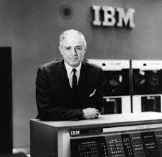

The son of a lumber dealer, Watson studied at the Elmira (New York) School of Commerce and then worked as a salesman, first in a retail store and then for a small cash register company. In 1895 Watson joined the sales staff of the National Cash Register Company in Dayton, Ohio, and he eventually rose to the post of general sales manager of the company under the tutelage of its president, John Henry Patterson. In 1912 Patterson involved Watson in an illegal antitrust scheme that resulted in convictions for both men, later overturned. Watson left the National Cash Register in 1913.
| Education | Institude | Carrer |
|---|---|---|
| Geology | University of Nabraska | Philanthrophist |
| Economist | University of Wisconsin | Professor |